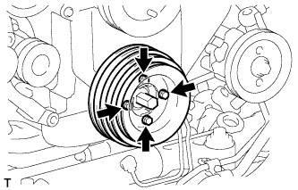
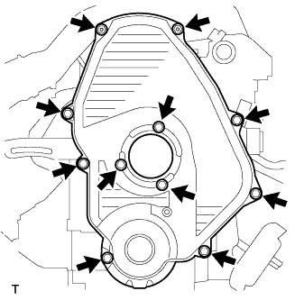
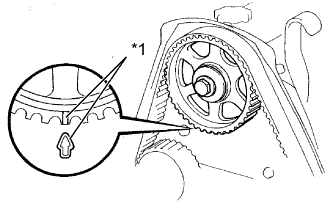

ПРИВОДНОЙ РЕМЕНЬ ГАЗОРАСПРЕДЕЛЕНИЯ > СНЯТИЕ |
| 1. DISCONNECT CABLE FROM NEGATIVE BATTERY TERMINAL |
| 2. REMOVE FAN SHROUD |
Remove the fan shroud (See page Нажмите здесь).
| 3. REMOVE VANE PUMP DRIVE PULLEY |
|  |
Remove the 4 bolts, vane pump drive pulley and cooler compressor drive pulley.
| 4. REMOVE CRANKSHAFT PULLEY |
 |
Using SST, remove the pulley bolt.
| *a | Hold |
| *b | Turn |
 |
Using SST, remove the pulley.
| *a | Hold |
| *b | Turn |
| 5. REMOVE IDLE PULLEY ASSEMBLY |
 |
Remove the 2 bolts and Idle pulley bracket.
| 6. REMOVE TIMING BELT COVER |
|  |
Remove the 11 bolts, washers, timing belt cover, and 2 gaskets.
| 7. REMOVE TIMING BELT GUIDE |
Remove the timing belt guide.
| 8. SET NO. 1 CYLINDER TO TDC/COMPRESSION |
 |
Using the crankshaft pulley bolt, align the groove of the crankshaft pulley with the timing pointer by turning the crankshaft clockwise.
| *1 | Timing Mark |
 | Turn |
|  |
Check that the timing marks of the camshaft timing pulley and No. 2 timing belt cover are aligned.
| *1 | Timing Mark |
| 9. REMOVE TIMING BELT |
 |
Turn the crankshaft 90° counterclockwise, and align the timing mark of the crankshaft timing pulley with the protrusion of the timing belt case.
| Turn |
 |
Loosen the No. 1 timing belt idler bolt (A), and shift the idler to the left as far as possible.
| Pry |
 | Move |
Tighten the No. 1 timing belt idler bolt (A), and then relieve the timing belt tension.
Remove the timing belt.
| 10. REMOVE NO. 1 TIMING BELT IDLER SUB-ASSEMBLY |
Remove the 2 bolts (A and B).
 |
Loosen the bolt (C), and remove the No. 1 timing belt idler.